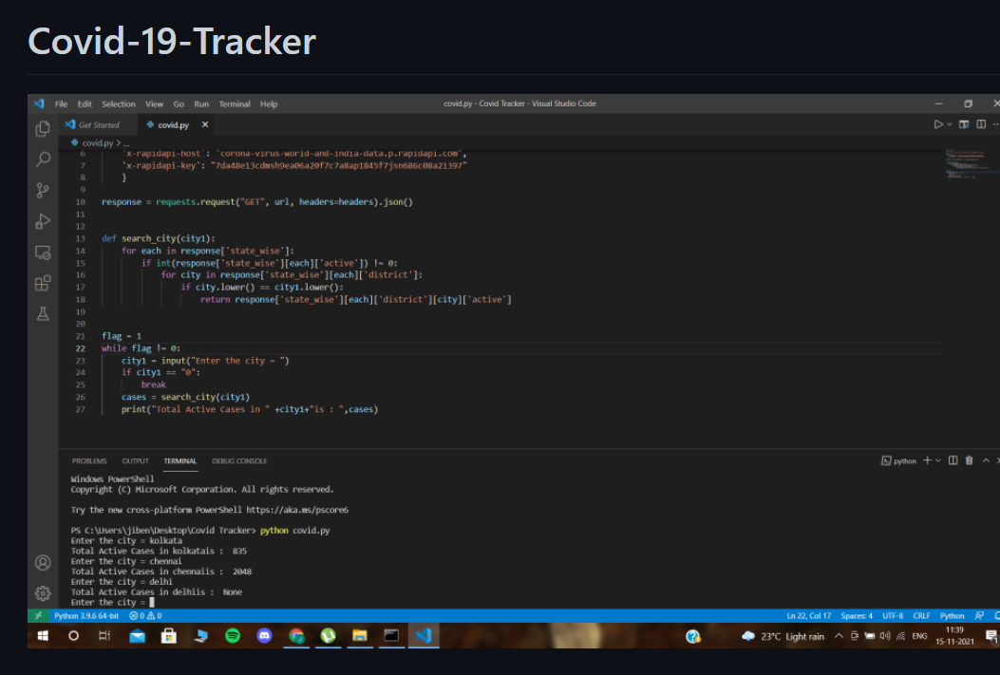

Covid 19 Tracker
Just an Atomated Script that takes data and accordingly tracks the number of cases or the number of deaths in India.
GitHub Link
Technologies:
- - Python
- - Python Modules Tkinter etc
Just an Atomated Script that takes data and accordingly tracks the number of cases or the number of deaths in India.
GitHub Link